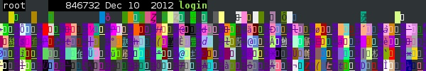
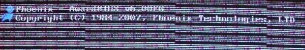
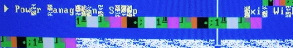
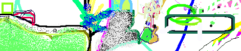
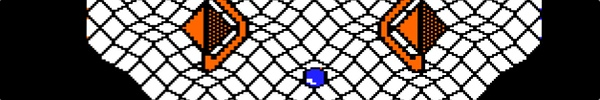
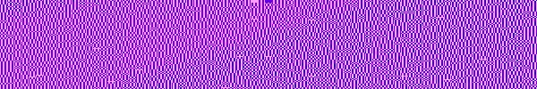
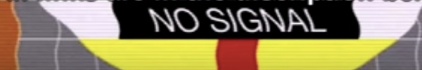
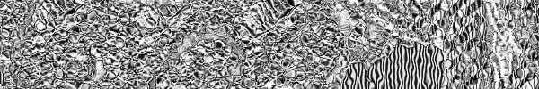

👹 ARTSTUFF.WTF
This is a recommendation list of mostly DIY art (and etc) spaces around Los Angeles that hold public events that are free or low cost, assembled summer 2018. This is a subjective and possibly idiosyncratic, error-prone list.

Art
Human Resources
Chinatown
Collectively-organized nonprofit space with an emphasis on performative and underexposed modes of expression
And/Or Gallery
Pasadena
New media art gallery. Openings held sporadically.
Armory Center For the Arts
Pasadena
Galleries, workshops, classes, performances.
The Hammer Museum
Westwood
Always free. Always contemporary. Exhibits, concerts, screenings, talks, etc.
Los Angeles Contemporary Archive
Chinatown
An artist publication archive. Holds semi-monthly exhibitions.
The Underground Museum
Mid-City (Arlington Heights)
A space for exhibitions, events, dialogue, and artist collaborations. Outdoor Garden. Free admission (donations accepted).
Navel
Downtown
A test site for collective autonomy, hosts exhibits, concerts, other events.
3307 W Washington Blvd
Mid-City
Residency, studio, talks, literary events, performances, meals.

Workshops
Side Street Projects
Northeast LA
Mobile-run arts org presenting community workshops, student maker classes, and artist support services.
Women's Center For Creative Work
Frogtown
Women's resource center, workshops, co-working space.

MUSIC
The Smell
Downtown
20 years strong! All ages punky DIY performance venue.
Zebulon
Atwater Village
Bar that hosts DIY weirdo concerts in a fancy though affordable venue.
The Museum of Jurassic Technology
Culver City
This renown avant museum also holds occasional concerts of traditional european and mid-eastern music. Get on their email list.
Coaxial
Downtown/South of 10
Video art, new media, sound art/experimental music. Non-profit.
Modular On the Spot
Atwater Village
Pop-up modular synth picnic happening bi-monthly in the warm months in North Atwater Park. Announced on Instagram.

FILM/VIDEO
Echo Park Film Center
Echo Park
Community-organized highly active space with experimental film screenings and workshops.

OTHER
The Velaslavasay Panorama
University Park
Somewhat in the same family as Jurassic Tech. Old theater, panorama, garden. Esoteric performances, talks, etc. A gem.
The Wende Museum
Culver City
A collections-based research and education institution preserving cold war artifacts and history. Hosts exhibits, talks, tours.
Bob Baker Marionette Theater
Westlake
A marionette puppet theater that holds kids events, experimental concerts, and more.

Radio
KCHUNG Radio
Chinatown
True community online and low power AM radio station. Dozens of shows. Hundreds of participants. Always changing. Holds events.
NTS Radio
Chinatown
Ultra-current web radio station (also LDN) broadcasting urban electronic experimental musics.

Alternative Ed
The Southland Institute
Unaccredited postgraduate workshop and repository of online art education resources

Poetry
Poetic Research Bureau
Chinatown
Publisher, reading room, and possibly still workshops from The Public School LA

BONUS
- The Southland Institute's list of outer schools
- Machine Project x Common Field's Guides to starting an art space, curating and planning events, and hosting workshops
